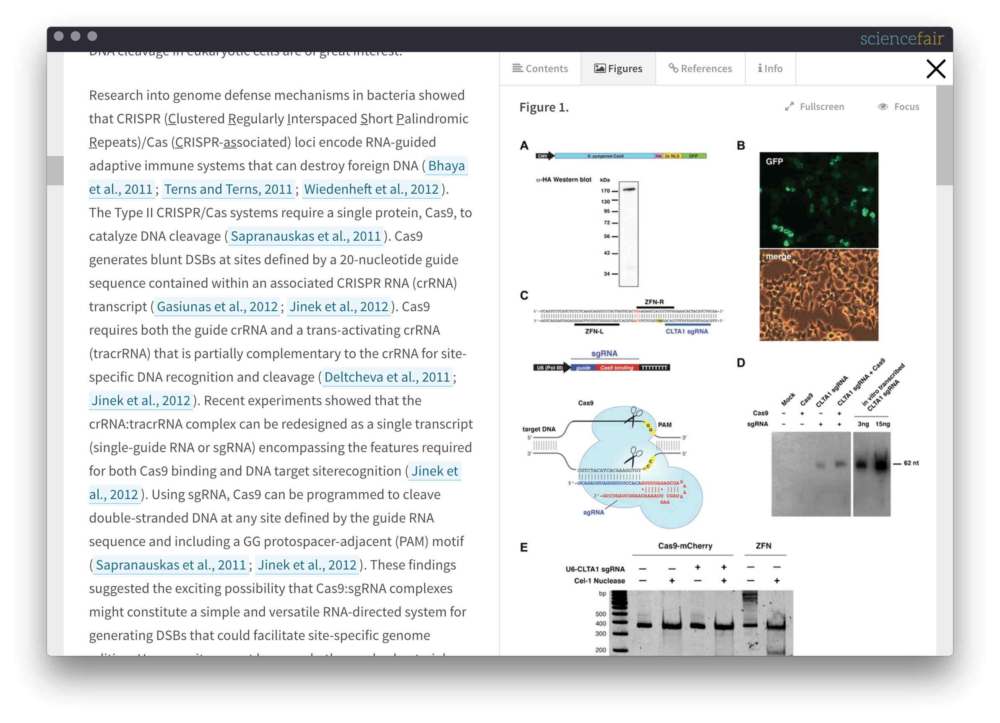
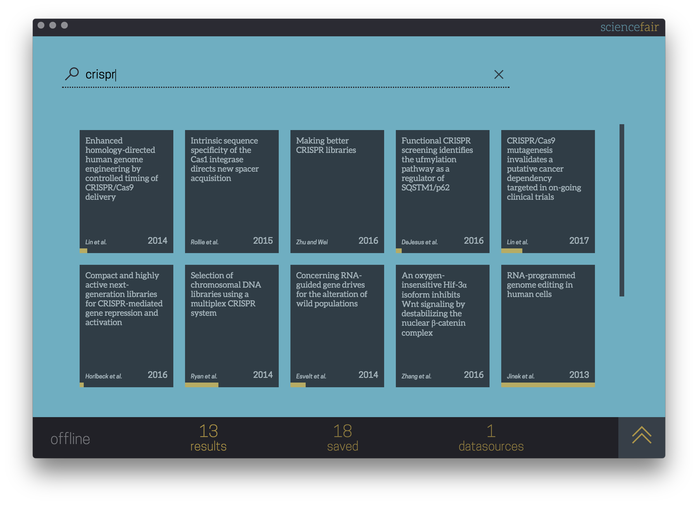

Features
-

Modern, search-driven user interace
ScienceFair uses blazing-fast search and a clean user interface to help you find and filter the literature you need. No hidden menus or complex settings.
-

A reader optimised for science
Instead of static PDFs, ScienceFair uses the eLife Lens reader for a rich reading experience that helps you navigate and interpret scientific papers better
-

Instant multi-source search
Search your own library and any number of distributed literature collections simultanously - the results are seamlessly merged as they stream in from the peer-to-peer network
-

Built-in bibliometrics and analytics
Results are automatically data-mined in real-time, giving you a live updating dashboard you can use to analyse the literature and refine your discovery process